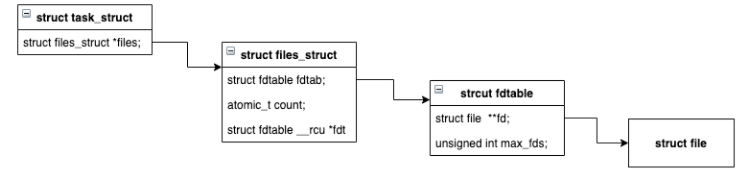

前言
文件描述符在unix系统中几乎无处不在
- 网络接口 select、poll、epoll 涉及到文件描述符
- IO接口 read、write 也涉及到文件描述符
从形式上来看文件描述就是一个整数，那么我们可不可以更进一步去了解一下呢？
本文打算通过一步一步实验去了解文件描述符到底是什么， 并在最后通过Linux内核相关的源码进行验证。
一个获取文件描述符的实例
我们可以通过 open 系统调用得到一个指定文件的文件描述符。
open 函数需要传入一个文件路径和操作模式， 调用会返回一个整型的文件描述符， 具体方法签名如下
/**
* path 代表文件路径
* oflag 代表文件的打开模式，比如读，写等
*/
int open(char *path, int oflag, ...)
我们写一段简单的代码来验证一下
#include <stdio.h>
#include <stdlib.h>
#include <fcntl.h>
int main(int argc, char* argv[]) {
// 以只读模式打开 demo.txt 文件
int fd = open("demo.txt", O_RDONLY);
if (fd == -1) {
perror("open demo.txt error\n");
return EXIT_FAILURE;
}
// 打印获取到的文件描述符
printf("demo.txt fd = %d \n", fd);
return EXIT_SUCCESS;
}
然后使用 GCC 编译，执行编译后的程序，我们就可以得到 demo.txt 的文件描述符了。
不出意外你将得到以下的执行结果：
$ echo hello>>demo.txt
$ gcc test.c -o test
$ ./test
$ demo.txt fd = 3
和方法签名一致，文件描述符是一个整型数。
你可以尝试多次执行该程序， 你会发现打印的文件描述符始终都是 3。
难道每个文件的文件描述符都是固定的？
每个文件的描述符是固定的吗？
为了验证前面的猜想，我在程序里面连续调用两次 open 函数，并打印两次返回的文件描述符， 代码如下：
#include <stdio.h>
#include <stdlib.h>
#include <fcntl.h>
int main(int argc, char* argv[]) {
int fd_a = open("demo.txt", O_RDONLY);
int fd_b = open("demo.txt", O_RDONLY);
printf("fd_a = %d, fd_b = %d \n", fd_a, fd_b);
return EXIT_SUCCESS;
}
下面是最终的执行结果：
$ gcc test.c -o test
$ ./test
$ fd_a = 3, fd_b = 4
尽管是同一个文件， 得到的文件描述符却并不一样，说明每个文件的描述符并不是固定的。
可是文件描述符每次都是从 3 开始的，这是为什么呢 ？
熟悉UNIX系统的同学应该知道，系统创建的每个进程默认会打开3个文件：
- 标准输入(0)
- 标准输出(1)
- 标准错误(2)
为什么是 3 ？ 因为 0、1、2 被占用了啊……
等等！文件描述符难道是递增的？我也不知道啊， 要不写个程序试试。
这里应该还有一个疑问：为什么前一节多次执行程序都是返回 3 ，而在代码里调用两次
open打开同样的文件却是 3 和 4 ？这个问题在后面多进程时会再提到。
文件描述符是递增的吗？
为了验证文件描述符是递增的， 我设计了这样一个程序
- 调用两次 open ， 分别得到两个文件描述符 3、 4
- 调用 close 函数将文件描述符 3 关闭
- 再次调用 open 函数打开同一个文件
如果文件描述符的规则是递增的，第 3 步返回的结果就应该是 5 。
Show me the code：
#include <stdio.h>
#include <stdlib.h>
#include <unistd.h>
#include <fcntl.h>
int main(int argc, char* argv[]) {
// 第一次打开
int a = open("demo.txt", O_RDONLY);
// 第二次打开
int b = open("demo.txt", O_RDONLY);
printf("a = %d, b = %d \n", a, b);
// 关闭a文件描述符
close(a);
// 第三次打开
int c = open("demo.txt", O_RDONLY);
printf("b = %d, c = %d \n", b, c);
return EXIT_SUCCESS;
}
编译执行
$ gcc test.c -o test
$ ./test
$ a = 3, b = 4
b = 4, c = 3
第三次打开的结果是 3 ，这说明文件描述符不是递增的。
而且从结果上来看，文件描述符被回收掉后是可以再次分配的。
前面讨论的上下文都是在单进程下，如果是多个进程同时打开同一个文件，文件描述符会一样吗？
文件描述符和多进程
fork 函数可以创建多个进程， 该函数返回一个 int 值， 当返回值为 0 时代表当前是子进程正在执行，非 0 就为父进程在执行。（为了简化代码，就不考虑进程创建失败的情况了）
程序很简单，就是父子进程各自打开同一个文件， 并打印该文件的文件描述符：
PS: 下面的代码并不规范，可能会产生僵尸进程和孤儿进程，但这并不是本文的重点……
#include <unistd.h>
#include <stdio.h>
#include <stdlib.h>
#include <fcntl.h>
int main(int argc, char* argv[]) {
int npid = fork();
if (npid == 0 ){
// 子进程
int child_fd = open("demo.txt", O_RDONLY);
pid_t child_pid = getpid();
printf("child_pid = %d, child_fd = %d \n", child_pid, child_fd);
} else {
// 父进程
int parent_fd = open("demo.txt", O_RDONLY);
pid_t parent_pid = getpid();
printf("parent_pid = %d, parent_fd = %d \n", parent_pid, parent_fd);
}
return EXIT_SUCCESS;
}
编译执行
$ gcc test_process.c -o test_process
$ ./test_process
$ child_pid = 28212, child_fd = 3
parent_pid = 28210, child_fd = 3
每个进程打开的都是同一个文件，而且返回的文件描述符也是一样的。
前面我们已经得知每个文件的描述符并不是固定的，这样看来，每个进程都单独维护了一个文件描述符的集合啊。
还记得最开始实验时，我们对编译好的程序多次执行都是打印的 3，但是在代码里对同一个文件 open 两次却是返回的 3 和 4 吗？
这是因为在 shell 每次执行程序，其实都是创建了一个新的进程在执行。
而在代码里连续调用两次，始终是在一个进程下执行的。
先总结一下
通过上面的实验，我们可以得出文件描述的一些规律
- 文件描述符就是一个整形数字
- 每个进程默认打开 0、1、2 三个文件描述符， 新的文件描述符都是从 3 开始分配
- 一个文件描述符被回收后可以再次被分配 (文件描述符并不是递增的)
- 每个进程单独维护了一个文件描述符的集合
Show me the code
talk is cheap , show me the code
By: Linus Benedict Torvalds
下面就需要在 Linux内核 的源码中去寻找真相了。
既然实验表明每个进程单独维护了文件描述符集合， 那就从和进程相关的结构体 task_struct 入手，该结构体放在 /include/linux/sched.h 头文件中。
我将这个结构体的代码精简了一下， 只保留了一些分析需要关注的属性
struct task_struct {
...
/* Filesystem information: */
struct fs_struct *fs;
/* Open file information: */
struct files_struct *files;
...
/* -1 unrunnable, 0 runnable, >0 stopped: */
volatile long state;
pid_t pid;
pid_t tgid;
...
};
注意 struct files_struct *files ，注释说该属性代表着打开的文件信息，那这就没得跑了。
继续看 files_struct 结构体，该结构体定义在 /include/linux/fdtable.h 头文件中：
struct files_struct {
// 打开的文件数
atomic_t count;
...
// fdtable 维护着所有的文件描述符
struct fdtable *fdt;
struct fdtable fdtab;
...
// 下一个可用文件描述符
unsigned int next_fd;
...
};
相信你也一眼就看见了 fdtable 这个结构体，见名知意，这不就是文件描述符表吗？ 那么它是不是维护了所有的文件描述符呢？
struct fdtable {
// 最大文件描述符
unsigned int max_fds;
// 所有打开的文件
struct file **fd; /* current fd array */
...
};
在 fdtable 里面有一个 file 结构体的数组，这个数组代表着该进程打开的所有文件。
先将上面的结构用一个图画下来：

这个源码结构展示了每个进程单独维护了一个文件描述符的集合的信息。
但是我们文件描述符是什么，以及它的生成规则还是没有找到。那只能换个方向，从函数调用去寻找了。
open 和 close 都涉及到对文件描述符的操作，由于 close 函数更加简单，就从 close 为入口进行分析。
下面是 close 函数的内部系统调用：
SYSCALL_DEFINE1(close, unsigned int, fd)
{
int retval = __close_fd(current->files, fd);
...
return retval;
}
close 调用了 __close_fd 函数, 该函数定义在/fs/file.c文件中，下面是简化后的代码：
int __close_fd(struct files_struct *files, unsigned fd)
{
struct file *file;
struct fdtable *fdt;
// 获取fdtable
fdt = files_fdtable(files);
// *** 通过文件描述符获取file结构体指针
file = fdt->fd[fd];
rcu_assign_pointer(fdt->fd[fd], NULL);
// 回收文件描述符
__put_unused_fd(files, fd);
return filp_close(file, files);
}
这里面又出现了我们熟悉的结构体 files_struct，注意 file = fdt->fd[fd] 这一段代码。
fdt 就是 fdtable结构体，它的 fd 属性就是打开的所有文件数组，这样一看也就恍然大悟了。
用户传进来的 fd 参数实际就是 fdtable 内的文件数组的索引。
所以， 文件描述符其实就是file结构体数组的索引。
相信关于后面
- 被回收后的文件描述符如何再次分配
- 文件描述符为什么从0开始
- 文件描述符为什么不能为负数
这些问题你都能迎刃而解了。